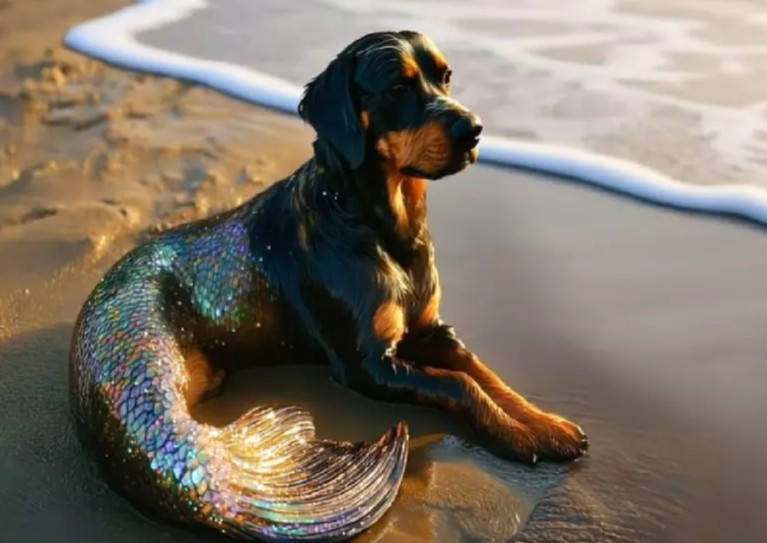
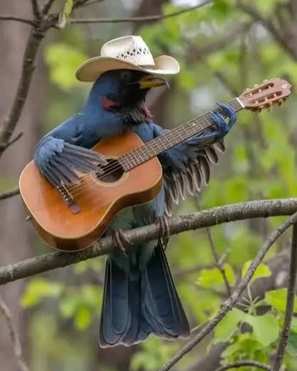

CACHORRO METADE SEREIA É ENCONTRADO NO LITORAL DO BRASIL
Por: Rebeca Wierbitzki
Brasileiros relatam ver cachorro metade sereia na areia da praia! Será um "sereidog" ou um "dogsereia"?
Vou compartilhar conhecimentos sobre tecnologia e programação

Por: Rebeca Wierbitzki
Brasileiros relatam ver cachorro metade sereia na areia da praia! Será um "sereidog" ou um "dogsereia"?

Por: Rebeca Wierbitzki
Homem tira foto de passarinho com chapéu tocando violão e posta em suas redes sociais.